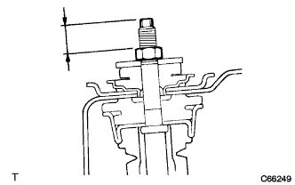
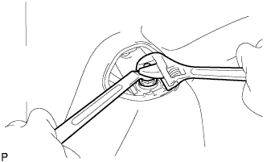

リヤサスペンションサポートASSY LHをリヤショックアブソーバASSY LHに取り付ける。
 |
ジャッキを徐々に上げていき、リヤショックアブソーバスペーサおよびナットでリヤショックアブソーバASSY LH(ロワー側)をリヤアクスルビームに仮締めする。
リヤサスペンションサポートおよびリヤショックアブソーバクツションリテーナを取り付ける。
|  |
ショックアブソーバASSY LHの二面幅を固定して、新品のナットを基準値まで締め付ける。
- 基準値
- 15-18mm
|  |
シヨツクアブソーバASSY LHの二面幅を固定して、新品のロツクナットを締め付ける。
- 基準値
- T = 24.5 N・m{ 250 kgf・cm }